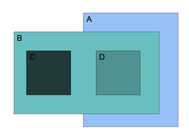
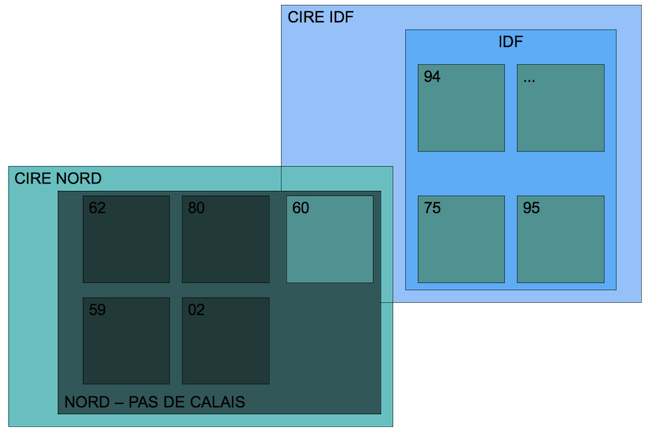
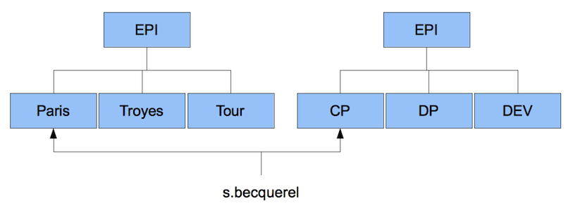
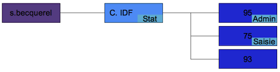
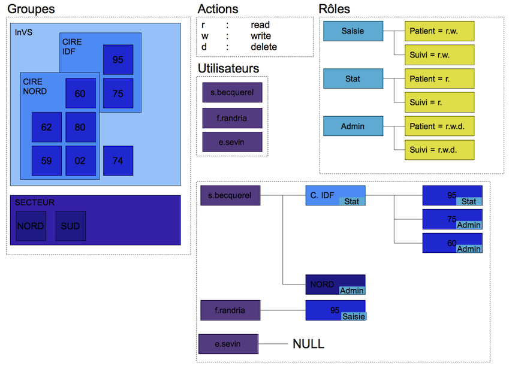
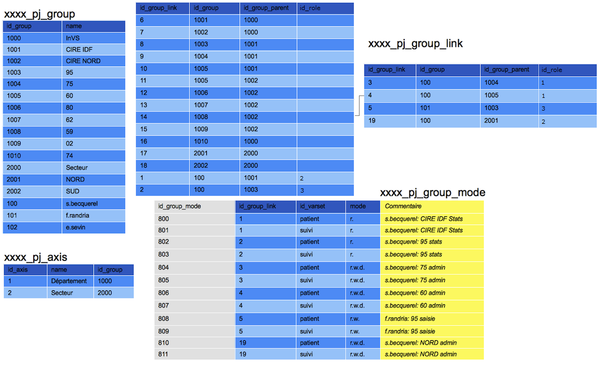
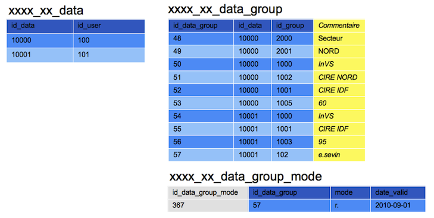

Droits¶
Introduction¶
On distingue deux types de droits :
- Ceux liés à la base de données (droit d’enregistrer, supprimer, voir des données dans un varset). Ces droits devront descendre jusqu’à la variable.
- Ceux liés aux fonctionnalités (pour le module listing: possibilité d’utiliser, créer et supprimer des listes).
Droits sur la base de données¶
Les groupes¶
Plusieurs parents¶
Un groupe peut avoir plusieurs parents.
Sur le schéma ci-dessus, le groupe D a pour parents A et B.
Sur le schéma ci-dessus le département 60 est géré à la fois par la CIRE IDF et la CIRE NORD (ce cas a été vu à l’InVS). De plus, on peut aussi avoir une notion de profondeur: les départements ont comme parents les CIRE, mais aussi les régions, car une cire n’est pas obligatoirement liées au mêmes départements qu’une région (on peut imaginer un CIRE qui est chargée de deux régions).
Plusieurs axes¶
Un axe correspond à un ensemble de groupes (cela correspondrait à l’arbre des groupes dans Voozanoo3). Il est possible d’avoir plusieurs axes.
Dans cet exemple sont représentés l’axe lieu, et l’axe profil. Un utilisateur doit être positionné dans tous les axes déclarés.
Lien entre les données d’un varset et les groupes¶
Chaque ligne d’un varset est liée à un ou plusieurs groupes. La règle est que lorsqu’une donnée est insérée dans un varset, elle est marquée comme appartenant au groupe où l’utilisateur a décidé de l’insérer, ainsi qu’à tous les parents de ce groupe.
Les rôles¶
Comme les catégories dans Voozanoo3, les rôles servent à définir les droits ainsi que les autorisations d’accès pour un ensemble d’utilisateurs. Un utilisateur à un rôle par groupe.
Dans l’exemple ci-dessus, l’utilisateur s.becquerel a le rôle stat sur le groupe IDF, qui lui permet d’analyser les données des groupes 95, 75, 93, il est également admin sur le 95, et saisie sur le 75. On peut avoir un utilisateur qui n’a aucun rôle sur les groupes, ce qui veut dire qu’il ne peut rien faire sur les données présentes dans la base. Cela peut servir car il est possible d’accorder des droits temporaires pour un utilisateur à un enregistrement donné.
Note
GSA : Il n’est plus possible de positionner un Utilisateur dans un Groupe sans lui attribuer de rôle. A voir plus tard s’il faudra de nouveau rendre possible de mécanisme
Un rôle défini les droits de l’utilisateur sur chaque varset et sur les modules. Les droits possibles sont la lecture (r), l’écriture (w) et la suppression (d) pour le Propriétaire et/ou le Groupe (Plus d’information dans cette note).
Warning
- Schéma déprécié, les droits sont maintenant spécifiés pour le Propriétaire et/ou le groupe
Définition des droits pour le rôle saisie sur les varsets patient et suivi.
En base de données¶
Les informations relatives aux rôles sont stockées dans 3 tables :
xxxx_pj_role: Les rôles (id_role, name et label).xxxx_pj_group_link: Contient l’informationid_rolepermettant de savoir qu’un “Utilisateur d’un groupe” à tel ou tel rôle, c’est ce champ qui est exploité pour modifier le contenu dexxxx_pj_group_modelors de l’édition d’un rôle.xxxx_group_role: Contient une “synthèse” des rôles affectés à un Utilisateur, c’est l’affectation d’un rôle à un “Utilisateur d’un groupe” qui conditionne le contenu de cette table. Cette table est très importante car le contrôle d’accès aux fonctionnalités est basé sur celle-ci. Plus tard c’est également cette table qui permettra de proposer à l’utilisateur, lors de sa connexion, de choisir le rôle désiré pendant sa session de travail.
Note
GSA : Il semble que la table xxxx_group_role soit dépréciée, plus utilisée mais maintenue à jour seulement dans certaines portions de code.
Un nettoyage / refactoring sera fait pour purger définitivement cette table. La table xxxx_pj_group_link contient déjà l’information “Quel utilisateur à quel rôle”, il faut effectuer un DISTINCT pour récupérer cette information.
Dans un fichier XML¶
Le paramétrage du rôle, lui, est stocké dans un fichier XML sur disque. Il contient les informations relatives aux accès (droits liés aux fonctionnalités) ainsi que celles relatives aux varsets. Il est important de comprendre que ce fichier XML ne contient pas les droits des utilisateurs mais uniquement le paramétrage des rôles pour un projet précis. C’est l’admin qui, en affectant un role à un utilisateur d’un groupe, paramètre les droits de l’utilisateur.
Il est à noter également qu’en temps normal le développeur n’a pas à modifier manuellement ce fichier, c’est le module de paramétrage des rôles qui le manipule.
Le format de ce fichier est :
<?xml version="1.0" encoding="UTF-8"?>
<acl_roles>
<!-- Role admin -->
<role id="1">
<access>
<allow name="form/frame/get"/>
<allow name="form/frame/save"/>
<allow name="form/frame/delete"/>
<allow name="project/role"/>
</access>
<varsets>
<varset name="dico" mode="7"/>
<varset name="assure" mode="7"/>
<varset name="prat" mode="7"/>
</varsets>
</role>
<!-- Role stats -->
<role id="2">
<access>
<allow name="form/frame/get"/>
</access>
<varsets>
<varset name="dico" mode="4"/>
<varset name="assure" mode="4"/>
<varset name="prat" mode="4"/>
</varsets>
</role>
</acl_roles>
Note
Les noeuds access sont documentés en détail dans la partie relative aux “ACL”.
Exemple¶
Structure de la base de données¶
 La table xxxx_xx_data_group_mode permet d’appliquer un droit particulier pour un utilisateur sur une données pour une période (optionnel).
Dans l’exemple ci-dessus, l’utilisateur 102 (e.sevin) déclaré dans la table xxxx_xx_data_group a un droit en lecture sur l’enregistrement 10001 jusqu’à la date du 01/09/2010.
Note
La notion de “mode” n’est pas réellement stockée sous la forme d’une chaine “r.w.d.”.
Le champ mode est en réalité un entier (integer) représentant les droits sous forme Binaire. C’est le résultat d’un OU logique des modes autorisés.
Structure d’un mode représenté sous forme binaire :
| Mode | Valeur (Dec.) | Valeur (Bin.) | Valeur (Octal) |
|---|---|---|---|
| Tous - Read (r) | 256 | 100000000 | 400 |
| Tous - Write (w) | 128 | 010000000 | 200 |
| Tous - Delete (d) | 64 | 001000000 | 100 |
| Propriétaire - Read (r) | 32 | 000100000 | 040 |
| Propriétaire - Write (w) | 16 | 000010000 | 020 |
| Propriétaire - Delete (d) | 8 | 000001000 | 010 |
| Groupe - Read (r) | 4 | 000000100 | 004 |
| Groupe - Write (w) | 2 | 000000010 | 002 |
| Groupe - Delete (d) | 1 | 000000001 | 001 |
Ainsi autoriser un rôle en :
- Lecture et Ecriture et Suppression pour le propriétaire
- Lecture et Ecriture pour le groupe
- Lecture pour tous les enregistrements
revient à faire ces OU logiques (opérateur : |) :
000100000 //(Propriétaire - Read)
| 000010000 //(Propriétaire - Write)
| 000001000 //(Propriétaire - Delete)
| 000000100 //(Groupe - Read)
| 000000010 //(Groupe - Write)
| 100000000 //(Tous - Read)
= 100111110 //32+16+8+4+2+256 = 318
Plus d’info sur l’opérateur OU logique : http://www.php.net/manual/fr/language.operators.bitwise.php
Caution
Il faut être très prudent lors de l’attribution d’un droit lié au niveau “Tous” car cela désactive les vérifications vis à vis de tous les groupes pour un utilisateur ayant un rôle contenant ce droit.
L’utilisation du niveau “Tous” pour un Varset permet donc à un utilisateur (quelque soit le ou les groupes d’appartenance des enregistrements) :
- Pour le droit “Read” : de voir tous les enregistrements du Varset
- Pour le droit “Write” : de modifier n’importe quel enregistrement du Varset (et d’en créer)
- Pour le droit “Delete” : de supprimer n’importe quel enregistrement du Varset
Insertion des données¶
Préparation du formulaire coté serveur¶
Il faut afficher la liste des groupes sur le formulaire. Il y a une liste par axe, et les groupes affichés sont ceux où l’utilisateur a le droit en écriture. Comme un formulaire peut contenir plusieurs varsets, et que les droits sont définis par varset, on peut avoir des incohérences: pour un groupe, droit en écriture pour le varset A, mais pas pour le varset B. Il faut donc récupérer les groupes où le droit d’écriture est présent pour tous les varsets du formulaire.
Si un varset n’est utilisé qu’en lecture seule, alors il ne devrait pas être pris en compte pour la sélection des groupes.
La sélection des groupes sur le formulaire est quasiment obligatoire. L’exception (qui pourrait être fréquente) est lorsqu’un utilisateur n’a les droit sd’écriture que sur un sul groupe.
Les listes peuvent être placées n’importe où sur le layout via la balise groupe_value. Elle prend un attribut qui est le nom de l’axe.
Départements: <group_value axis="1"/>
Secteurs: <groupe_value axis="2"/>
La balise group_value est transformée en appel à un plugin smarty après transformation du layout XML en layout template. Le plugin smarty génère ensuite une liste au format HTML.
Il faut que les axes soient envoyés au client dans les données qui sont au format JSON.
Traitement coté client¶
Le changement d’une liste de groupes entraine la mise à jour de l’objet javascript frameform. Au moment de la sauvegarde du formulaire, les groupes sélectionnés sont ajoutés aux données à envoyer au serveur. Format:
data
- axis
- group
NB: à la mise à jour d’une fiche, on met dans ces champs les groupes sélectionnés (pour cela on prend le groupe le plus “bas” dans la table qui lie un enregistrement à des groupes).
Insertion des données coté serveur¶
Pour chaque varset présent dans les données, le système vérifie que l’utilisateur a les droits en écriture pour les groupes indiqués
- Si une erreur survient, le processus d’insertion est interrompu.
Il met à jour la table data_group avec le group sélectionné pour un axe, ainsi que tous ses parents.
Droits d’accès aux fonctionnalités (ACL)¶
Pour gérer les droits d’accès aux fonctionnalités Voozanoo4 utilise les ACL (Access Control List) du Zend Framework.
Les ACL reposent sur la notion de Ressources (que nous assimilons à une fonctionnalité) et la notion de Rôle (qui est affecté à un “Utilisateur d’un groupe”).
Ressources “Natives”¶
Les ressources nativement prises en compte par Voozanoo4 (et testées) sont :
- Les accès à
module/controller - Les accès à
module/controller/action
Ainsi lorsque le plugin Core_Plugin_Auth est appelée (méthode routeShutdown), le Zend Framework a déjà déterminé la route appelée (Module/Controller/Action). Le plugin vérifie alors :
- Si une ressource de type
module/controllerest définie, et si oui si l’utilisateur courrant est autorisé à y accéder. - Si une ressource de type
module/controller/actionest définie, et si oui si l’utilisateur courrant est autorisé à y accéder.
Dans le cas où l’utilisateur est “rejeté”, le plugin Core_Plugin_Auth change le routing de la requête pour rediriger vers error/index/acl.
Ressources “Spécifiques”¶
Il est possible de déclarer des ressources qui ne sont pas intimement liés à la notion de Module/Controller/Action.
Prenons comme exemple un développement spécifique permettant de lister des dossiers, d’en éditer (enregistrement) et d’en supprimer. Le développeur mettrait en place, dans le module “Form”, un controller “DossierController” avec comme action :
- getdossierAction() : Appelant $this->_getFormConfiguration()
- savedossierAction() : Appelant $this->_saveForm()
- deletedossierAction() : Appelant $this->_deleteRecords()
Ces trois actions rentrent parfaitement dans le cas des Ressources “Natives” (form/dossier/get, form/dossier/save, form/dossier/delete).
En revanche dans le cadre de la validation du dossier (effectuée dans un Point d’accès) il est impossible de mettre un Contrôle d’accès avec les Ressources “Natives”.
Il faut alors déclarer une ressource (au sens ACL) dans le fichier [pj]_acl_resources.xml :
<?xml version="1.0" encoding="UTF-8"?>
<acl_resources>
<!-- ... -->
<resource name="valider.dossier" label="Valider un dossier" />
<!-- ... -->
</acl_resources>
Puis le développeur doit se charger de tester la Ressources (ACL) à l’endroit voulu :
<?php
class Form_DossierController extends Core_Library_Controller_Action
{
public function _savedossier_save_beforeCommit( Core_Library_Event_Context $oCtx )
{
if ( /* tests pour vérifier que le dossier devrait être validé */ )
{
if ( false === $this->_helper->acl()->isAllowed('valider.dossier') )
{
return;
}
}
}
}
L’ActionHelper Core_Library_Action_Helpers_Acl change le module/controller/action de la requête courante pour rediriger vers l’erreur Acl si l’utilisateur n’a pas l’autorisation d’accès lors de l’appel à isAllowed().
Si la redirection ne doit pas se faire et qu’il faut laisser le soin au développeur la gestion du cas “Utilisateur non autorisé” il suffit de passer false en deuxième paramètre à isAllowed() .
<?php
$this->_helper->acl()->isAllowed('valider.dossier', false);
Fonctionnement¶
Comment Voozanoo4 déclare les Ressources et les Rôles (au sens ACL) :
- Extraction des ressources déclarées au niveau du fichier Xml du Core (noyau)
- Extraction des ressources déclarées au niveau du fichier Xml du projet (optionel)
- Déclaration de ces ressources en tant que Zend_Acl_Resource
- Extraction des rôles définis au niveau du fichier Xml du projet
- Déclaration des rôles extrait du fichier Xml
- Déclaration des autorisations d’accès aux ressources par rôles
- Déclaration de l’utilisateur comme un rôle ayant pour parent les rôles qui lui sont affectés
Fichiers de Ressources¶
Les fichiers de ressources sont pour l’instant édités manuellement.
- Le fichier
core_acl_resources.xmlest stocké au niveau du noyau VOOZANOO4 danssrc/resources/xml_resources/ - Le fichier
[prj]_acl_resources.xmlest stocké au niveau du projet, le path utilisé est celui défini par la directivevoozanoo.resources.pathdans le fichier .ini
Ces deux fichiers respectent la même syntaxe, le fichier de ressources lié au projet est optionel (dans le cas d’un projet sans spécificité particulière) :
<?xml version="1.0" encoding="UTF-8"?>
<acl_resources>
<group label="Formulaires généraux">
<resource name="form/frame/get" label="Afficher un formulaire" />
<resource name="form/frame/save" label="Saisir une fiche" />
<resource name="form/frame/delete" label="Supprimer des enregistrements" />
</group>
<group label="Gestion des projets">
<resource name="project/manager" label="Paramétrage des projets" />
</group>
<group label="Gestion des rôles">
<resource name="project/role" label="Paramétrage des rôles" />
</group>
</acl_resources>
La possibilité de regrouper les ressources dans des groupes permet d’améliorer la présentation lors du paramétrage des rôles.